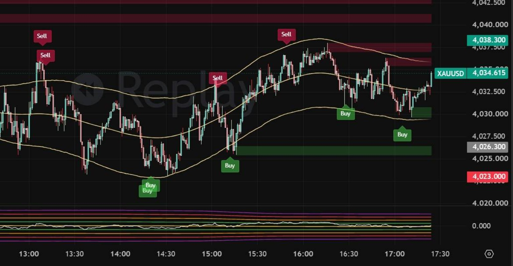
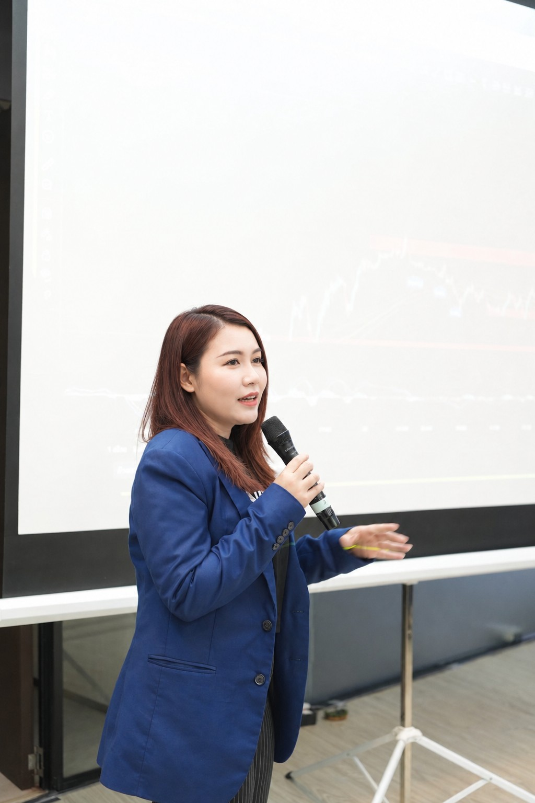
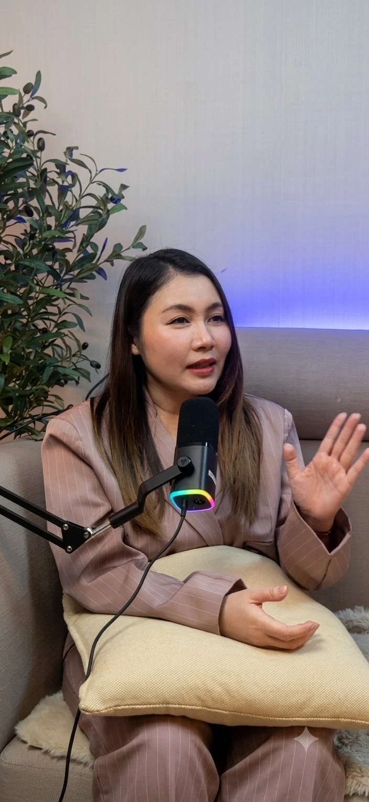
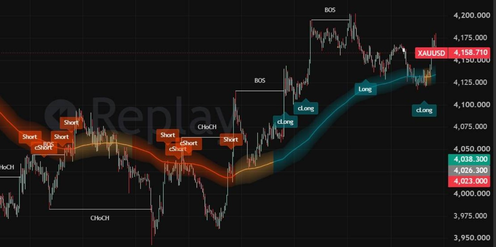
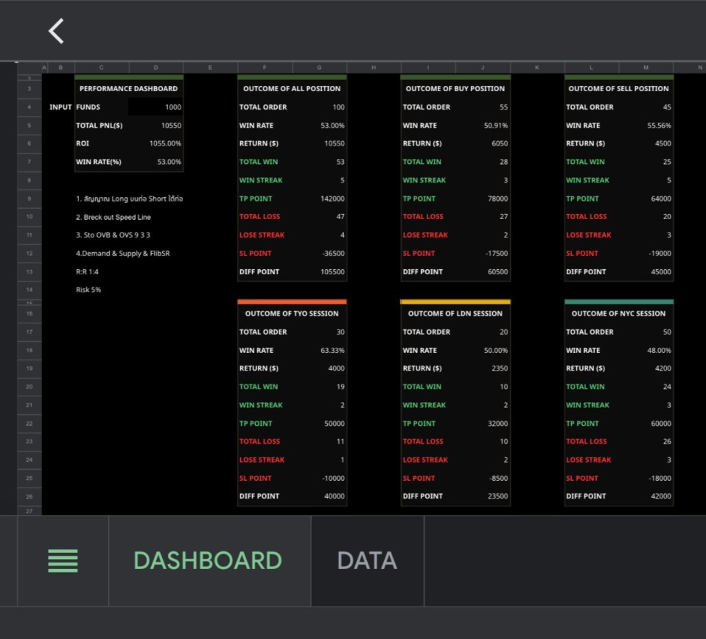
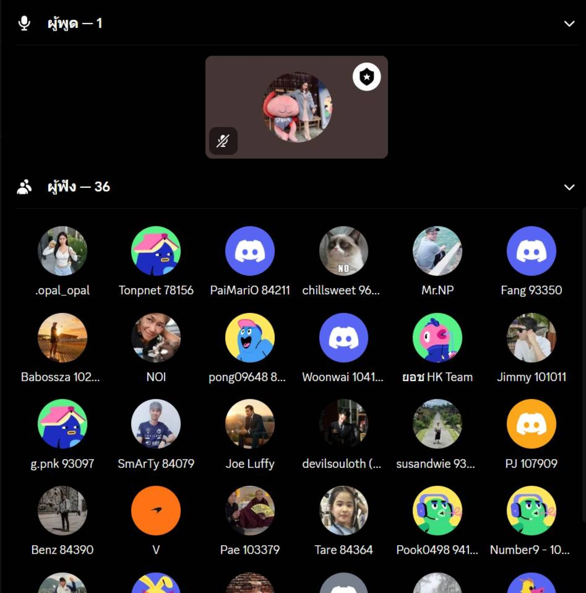
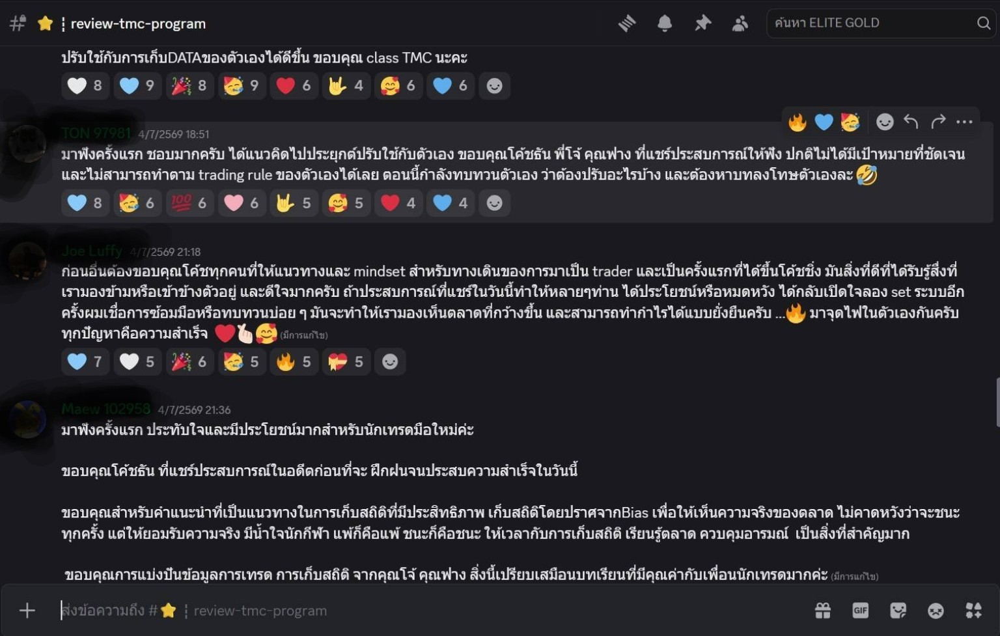

GSSGold Swing Strategy
ช่วยมอง Swing, Buy/Sell Zones, Dynamic Zones และ Market Context เพื่อวางแผนได้เป็นขั้นตอน
พัฒนาตั้งแต่พื้นฐาน วิธีคิด การวางแผน และการเก็บสถิติ ผ่าน Master Class, TMC, Coaching และ Community ที่ช่วยให้คุณค่อย ๆ ยืนได้ด้วยตัวเองในตลาด


“การเทรดไม่ควรเป็นเรื่องน่ากลัว และคุณไม่จำเป็นต้องเดินลำพังในตลาดนี้”
กว่า 8 ปีในโลกการลงทุน ปูเคยผ่านทั้งความสำเร็จ ความผิดพลาด และช่วงเวลาที่ต้องเรียนรู้จากการสูญเสีย จนค้นพบว่าสิ่งที่ทำให้นักเทรดอยู่รอดในระยะยาว ไม่ใช่การคาดเดาตลาด แต่คือระบบ วินัย และการบริหารความเสี่ยง
PU MoneyMind จึงไม่ได้ตั้งใจเป็นเพียงผู้สอน แต่เป็นพาร์ตเนอร์ในการพัฒนาการเทรด เพื่อช่วยให้คุณเข้าใจ วางระบบ และเติบโตได้ด้วยตัวเองอย่างยั่งยืน
เครื่องมือมีหน้าที่ช่วยจัดระเบียบข้อมูลบนกราฟ ไม่ใช่ทำนายอนาคต เพื่อให้ผู้เรียนตัดสินใจจากบริบทที่ชัดเจนขึ้น

GSSช่วยมอง Swing, Buy/Sell Zones, Dynamic Zones และ Market Context เพื่อวางแผนได้เป็นขั้นตอน

TTSใช้ยืนยันแนวโน้ม โครงสร้าง Momentum และจังหวะ Entry ผ่าน Trend Tunnel และสัญญาณประกอบ
สำหรับมือใหม่หรือผู้ที่เคยเทรดแต่ยังขาดความเข้าใจ เริ่มตั้งแต่ Mindset, Technical Mean Reverse, Trade Setup และการฝึกใช้งานจริง
สำหรับผู้ที่มีพื้นฐานและมี GSS + TTS แล้ว เน้นสร้างระบบเทรดจากข้อมูลจริง ผ่าน Coaching, Homework Review และ Trade Statistics
เลื่อนดูบรรยากาศคลาส Workshop และ Coaching แบบใกล้ชิด


วิเคราะห์ Win Rate, Buy/Sell Performance, Session, Risk/Reward และพัฒนาระบบจากข้อมูลที่เก็บจริง

พูดคุย ถามตอบ วิเคราะห์ตลาด และทบทวนแผนร่วมกันใน Community อย่างต่อเนื่อง
กดภาพย่อเพื่อดูรีวิวต้นฉบับใน Interactive Gallery

พูดคุยกับทีมงาน เพื่อเลือกเส้นทางการเรียนที่เหมาะกับระดับและเป้าหมายของคุณ
ปรึกษาฟรีผ่าน LINE OA